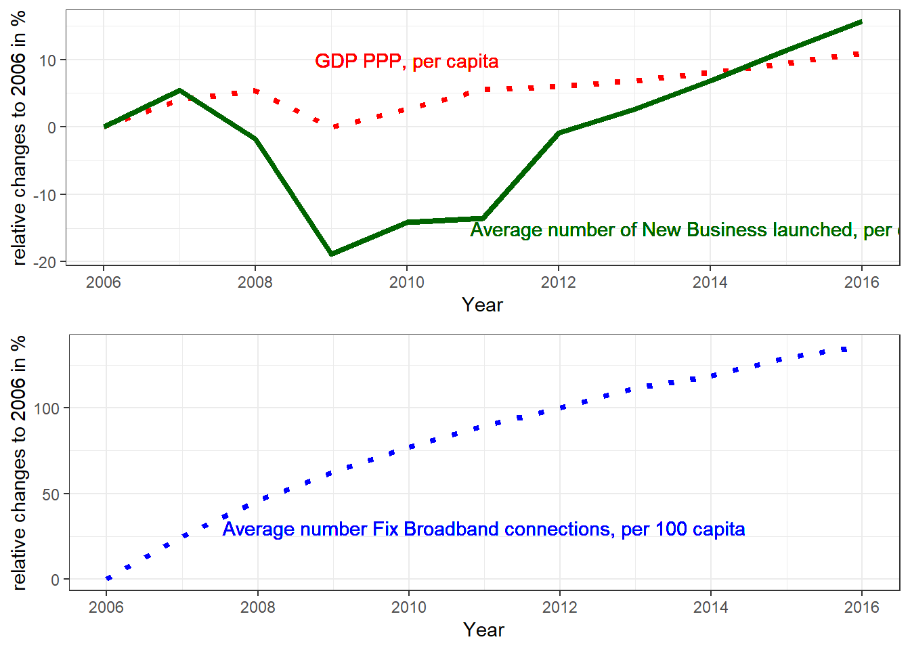

Abstract
Analysis on possible causal relationship between Broadband penetration and Number of newly established enterprises in Europe based on World Bank data between 2006 and 2016
Scope
Probably the biggest transformative innovation of the last century was Internet, with indisputably enormous impact on every walk of life, including entertainment, transport, business and society. All these “miracles” could not have been delivered without broadband access as enabling platform. Broadband started at around the very end of 90s / early 2000 (depends on the definition), has spread with incredibly rapid pace and by the end of 2017 the number of fixed broadband connections reached almost 1 Billion worldwide. Though the number of internet users is way higher thanks to the super-fast advancement of mobile broadband (more than 3.5 Billion “human” subscriptions at the end of 2017, plus about 20 Billion devices), enterprises and the business segments in the past decade have been more relying on fix broadband.
There has been a number of research works carried out to analyze the various sociological and economic impacts of broadband access. As the ITU 2012 research report points out, studying economic effects of broadband raises a number of methodological problems. Consequently, it is hard to precisely quantify the contribution of broadband access to economic growth. However, most findings seem to support the hypothesis that the impact does exist, even if the mechanism is complex.
One potential component of the complex association is the relationship between broadband availability and the number of new companies established. As the referred ITU report suggests, at high broadband penetration there is an incentive to develop new businesses around information search, advertising and e-commerce. After all, in a more generic context, relationship between infrastructural development and number of starting companies does exist.
The question that I was investigating in this short paper is: Did fix broadband access availability increase the number of newly registered companies in Europe?
The reason for limiting the scope to Europe is that there were not many countries in the world that regularly reported both the target and the explanatory variables (see Annex for details), Europe was one of the few geographically -and to some extent culturally- coherent region with enough reported data.
Researches with narrower and somewhat different scopes have found similar relationship, e.g. McCoy et al. recent publication in November 2017 between broadband and location of new business in Ireland, or Shideler 2012 research between broadband access and growth of small businesses in certain segments in Kentucky.
Understanding that “business friendly climate” is made up of a very large number of factors and broadband is only one of them, I was still wondering if World Bank data provides evidence to the above question.
Data
Country-year level panel dataset was obtained from the World Bank’s World Development Indicators database.
The target variable was “New businesses registered (number)”, while the explanatory variable: “Fixed broadband subscriptions (per 100 people)”. The latter is a penetration type indicator, i.e. a percentage variable.
The target variable indicator was not collected at all before 2006 (at least there was no data in the database), which unfortunately limited the analysis to the 2006 - 2016 years, excluding the interesting period when broadband rollouts started to take off in developed countries. (Even in this period less than half of the countries worldwide reported “New businesses registered (number)”. When it comes to continents, sufficient data was provided from Australia, South America and Europe, from the rest of the world there was no any or only sporadic statistics.)
There were still a few missing data among the target and explanatory variables, really small in numbers and all from the earlier years, indicating that some countries started to report these indicators slightly later than others.
As the number of new business are driven by numerous social, economic, policy related factors, almost 50 other indicators were also fetched from the World Bank database as potential control variables. All of those - with common sense - could be reasonable suspects of “business climate impactors”, hence possibly effecting the target variable. During the analysis I dropped most of it due to having way many missing values, or because I found the potential impact on the target variable inconsequential.
The final panel data was slightly unbalanced. For all variables (target, explanatory, controlling) the distribution was checked, also the systematic or random nature of missing values. For certain variables the lack of data was systematic, i.e. in Europe Liechtenstein seems not to provide data for certain indicators, but in no case the missing values notably impacted the distribution of the target variable.
Variables that were population aggregates in their original form have been normalized to population.
Multicollinearity of variables was not found.
For rightly skewed variables (including the target) the log was used in the analysis, for the rest (including the explanatory) the level.
The scope of the analysis was Europe only, including 45 countries.
Worth note the trend: Plotting the yearly average figures of GDP, Number of new businesses registered, and Broadband penetration reveals strong trend across time in both the explanatory and target variables. Also note that the time curves show closer similarity between GDP and number of new businesses than between fixed broadband lines and number of new businesses. Also shows that the 2008 subprime crisis hit both GDP and newly started business numbers, while seemingly and surprisingly had no effect on broadband investments. (See relevant plots in Annex chapter 7.2.1.)
Analysis
The analysis was run with four model types as follows:
Multiple OLS model,
First Difference (FE) model,
Fixed Effect (FE) model,
Long Differences (LD) model.
Multiple OLS model
Multiple cross country OLS model was run for years 2006, 2010, 2016 with and without control variables.
Running the regressions without the control variables showed significant positive relationship between New Business Registered and Fixed Broadband Connection (95%, 95%, 99% confidence levels, respectively), but with very low R2 (0.10, 0.12, 0.14).
As a simple baseline, log of GDP per capita (expected to have tight relationship to the number of new companies) was added as controlling variable. Interestingly, there was only one coefficient that was somewhat significant: the Fix Broadband penetration coefficient in 2010 was significant at 95%.
When added more controlling variables, at much higher R2 levels (0.55, 0.66, 0.51 respectively), none of the three OLS models indicated strong enough relationship between the target and the explanatory variables.
The only purpose of doing OLS was to get a very high level first impression, the real study is based on time series analysis. Therefore the OLS results will not be discussed here, however, included in Annex 7.2.2.
First Difference model
Model Description
Year dummies are included in this model in order to control the trend effects,
Several versions were tested, with and without lags,
Cumulative model - with and without control variables -was also applied (containing the last lag and the difference of lags) in order to get a single estimated coefficient for the cumulative effect and a single standard error estimate,
Clustered Standard Error (SE) was used in order to control for heteroskedasticity and serial correlation.
Results of the Simple First Difference Model (not cumulative)
The details are provided in Annex 7.2.3 (Table “First Difference Models, Europe 2006 - 2016 analysis, no control”);
The models show -in absolute terms- very small coefficients, which in some models are positive, in some are negative;
The largest model is with 6 years lag, taking into account the analysis period there is no point going higher in lags;
Only the model with 4 and 6 lags show 95% or better significance for any broadband related coefficient.
Coefficient Interpretation
Interpretation of the 0 lag model (FD0, Contemporaneous effect): In years when the number of broadband connections increase by 1%, the number of newly registered businesses tend to decrease by 0.6% on average immediately. The relationship is not significant.
Interpretation of the 6 lags model:
Contemporaneous effect: In years when broadband penetration increase by 1%, the number of newly registered businesses tend to increase by 1.1% on average immediately, not significant.
Lagged effect (2 year lag): Two years after the number of broadband connections increases by 1%, the number of newly registered businesses tend to decrease by 2.6%, significant at 95%.
Lagged effect (4 year lag): Four years after the number of broadband connections increase by 1%, the number of newly registered businesses tend to increase by 2.2%, significant at 90%.
Cumulative association: within 6 years after the number of fix broadband connections increased by 1%, the number of new businesses tend to decrease by 1.4% on top of the trends (summing up the diff and lag-diff coefficients).
(See Annex 7.2.3, Table “First Difference Models, Europe 2006 - 2016 analysis, no control”, Column “FD6”“)
Results of the Cumulative First Difference Model
- Details are in Annex 7.2.4 and Annex 7.2.5 (Tables “First Difference Cumulative Models, Europe 2006 - 2016 analysis, no control” and “First Difference 6 lags Cumulative Models, Europe 2006 - 2016 analysis, control added”).
Coefficient Interpretation
Interpretation of the 6 lags model with no control:
Within 6 years after the number of fix broadband connections increased by 1%, the number of new businesses tend to decrease by 1.4% on top of the trends (coefficient of diff(FBB_perca), not significant.Interpretation of the 6 lags model with controls:
Compare two countries with the same change in all control variables in 6 consecutive years. One experienced a larger increase in the number of broadband connections in the first year, and then broadband penetration remained the same in the subsequent six years in both countries. The Number of newly registered business units decreased by 3.7% in the country that experienced 1% higher increase in broadband access by the end of the 6th year after the increase in broadband connections. The coefficient is not significant, it is likely that broadband access change has no impact on the change of the number of newly registered business units.
Fixed Effects model
Model Description
In order to control the trend effects, country and year fixed effects were applied,
Two models were used, one without and one with control variables,
Clustered Standard Error (SE) was used in order to control for heteroskedasticity and serial correlation.
Results
The details are provided in Annex 7.2.6;
Neither the model with control, nor the one without control variables showed significant association between the number of broadband connections and the number of newly registered business units. Some other variables show significant relationship.
Coefficient Interpretation
- Controlled model coefficient interpretation: Compare years within the same country with the same level in each control variable parameter but different level of broadband access. In years when the number of broadband access lines is 1% higher than its long term average, the number of newly registered business units tends to be 0.6% lower than its long term average. The relationship is not significant, likely does not exist at all.
Long differences model
Model Description
Two models were run, one without and one with control variables,
Robust standard error was used, since this is technically cross sectional regressions.
Results
The details are provided in Annex 7.2.7;
Neither the model with control, nor the one without control variables showed significant association between the number of broadband connections and the number of newly registered business units. Some other variables show significant relationship.
Coefficient Interpretation
- Comparing two countries that experienced the same change in all control variable indicator changes between 2006 and 2016 but different change in the number of broadband connections during the same period, the country with 1% increase in broadband penetration experienced 0.5% drop in the number of newly registered businesses. The relationship is not significant, likely does not exist at all.
Conclusion
Three different panel data analysis were carried out on the dataset, and though these estimate related but different aspects of association between two variables, they were all consistent in not showing significant relationship between explanatory and target variables, at least not in the given period amongst the analyzed 45 European countries. Reverse causality was not tested, as economically it is inexplicable that the number of newly established enterprise units would significantly impact the total broadband penetration (the number of residential connections is probably magnitudes higher than the number of enterprise connections).
Worth note the followings:
The analyzed period contains the 2008 economy crash, which obviously impacted all business / economic trends. For this reason I repeated the same analysis for the 2009 - 2016 period (obviously skipping OLS for 2006 and the 6 lag models); this analysis fundamentally was the same: showed no significant relationship between broadband penetration and the number of newly registered businesses.
At the beginning of the process I had to exclude a large number of variables from the list of collected possible controlling variables, due to too many missing values. There may be confounders among those. This is not expected to impact the result of the study (no evidence of causal relationship between target and explanatory variable), it implies that the causality relationships the models show in relation to the target variable and some of the controlling variables may not be true, as there is a good chance of unobserved heterogeneity.
References
ITU (2012) “Impact of broadband on the economy: Research to Date and Policy Issues”
David Shideler, Narine Badasyan, (2012) “Broadband impact on small business growth in Kentucky”, Journal of Small Business and Enterprise Development, Vol 19 Issue:4, pp. 589-606
David McCoy, Sean Lyons, Edgar Morgenroth, Donal Palcic and Leonie Allen (2017) “The impact of broadband and other infrastructure on the location of new business establishment”, Grantham Research Institute on Climate Change and the Environment Working Paper No. 282
Annexes
Annex 1: Data
Countries that provided enough data for the analysis on target and explanatory variable
Criteria: within the period from 2006 to 2016 provided at least in 6 years data on target variable “New businesses registered (number)” and on explanatory variable “Fixed broadband subscriptions (per 100 people)”.
Countries within the scope of the analysis
[1] "Albania" "Armenia"
[3] "Austria" "Azerbaijan"
[5] "Belarus" "Belgium"
[7] "Bosnia and Herzegovina" "Bulgaria"
[9] "Croatia" "Cyprus"
[11] "Czech Republic" "Denmark"
[13] "Estonia" "Finland"
[15] "France" "Georgia"
[17] "Germany" "Hungary"
[19] "Iceland" "Ireland"
[21] "Israel" "Italy"
[23] "Latvia" "Liechtenstein"
[25] "Lithuania" "Luxembourg"
[27] "Macedonia, FYR" "Malta"
[29] "Moldova" "Montenegro"
[31] "Netherlands" "Norway"
[33] "Poland" "Portugal"
[35] "Romania" "Russian Federation"
[37] "Serbia" "Slovak Republic"
[39] "Slovenia" "Spain"
[41] "Sweden" "Switzerland"
[43] "Turkey" "Ukraine"
[45] "United Kingdom" Indicators collected from the World Bank Database
[1] “Country Name”
[2] “Country Code”
[3] “Year”
[4] “V1”
[5] “2005 PPP conversion factor, GDP (LCU per international $)”
[6] “Adequacy of social insurance programs (% of total welfare of beneficiary households)”
[7] “Adequacy of unemployment benefits and ALMP (% of total welfare of beneficiary households)”
[8] “Bribery incidence (% of firms experiencing at least one bribe payment request)”
[9] “Children out of school (% of primary school age)”
[10] “Commercial bank branches (per 100,000 adults)”
[11] “Cost of business start-up procedures (% of GNI per capita)”
[12] “Coverage of social insurance programs (% of population)”
[13] “CPIA quality of public administration rating (1=low to 6=high)”
[14] “CPIA social protection rating (1=low to 6=high)”
[15] “CPIA trade rating (1=low to 6=high)”
[16] “CPIA transparency, accountability, and corruption in the public sector rating (1=low to 6=high)”
[17] “Domestic credit to private sector (% of GDP)”
[18] “Ease of doing business index (1=most business-friendly regulations)”
[19] “Educational attainment, at least Bachelor’s or equivalent, population 25+, total (%) (cumulative)”
[20] “Educational attainment, Doctoral or equivalent, population 25+, total (%) (cumulative)”
[21] “Employment to population ratio, 15+, total (%) (modeled ILO estimate)”
[22] “Final consumption expenditure (constant 2010 US$)”
[23] “Firms using banks to finance investment (% of firms)”
[24] “Fixed broadband subscriptions (per 100 people)”
[25] “GDP per capita (constant 2010 US$)”
[26] “GDP per capita, PPP (constant 2011 international $)”
[27] “Government expenditure on education, total (% of GDP)”
[28] “Household final consumption expenditure per capita (constant 2010 US$)”
[29] “Household final consumption expenditure, etc. (% of GDP)”
[30] “Inflation, consumer prices (annual %)”
[31] “International tourism, number of arrivals”
[32] “Labor force with advanced education (% of total working-age population with advanced education)”
[33] “Literacy rate, adult total (% of people ages 15 and above)”
[34] “Logistics performance index: Overall (1=low to 5=high)”
[35] “Losses due to theft and vandalism (% of annual sales of affected firms)”
[36] “Market capitalization of listed domestic companies (% of GDP)”
[37] “Net taxes on products (constant LCU)”
[38] “New businesses registered (number)”
[39] “Patent applications, residents”
[40] “Population ages 15-64 (% of total)”
[41] “Population ages 15-64, total”
[42] “Population, total”
[43] “Profit tax (% of commercial profits)”
[44] “Research and development expenditure (% of GDP)”
[45] “Taxes on goods and services (% of revenue)”
[46] “Taxes on income, profits and capital gains (% of revenue)”
[47] “Time required to start a business (days)”
[48] “Trade (% of GDP)”
[49] “Unemployment, total (% of total labor force) (modeled ILO estimate)”
Selected control variables
Of all the collected variables the below ones have been selected as controls based on two principles:
There is some logic that justifies potential notable relationship between the control and the target variables.
There were enough number of samples. Criteria for “enough” was not more than 10% missing values.
The variables and their shortened name in the analysis tables are listed below:
| Variable Name in World Bank database | Shortened name in below report |
|-----------------------------------------------------------------------|---------------------------------|
| New businesses registered (number)* | NB_perca (target variable |
| Fixed broadband subscriptions (per 100 people) | FBB_perca (explanatory variable)|
| Cost of business start-up procedures (% of GNI per capita) | StartCost_percent |
| Domestic credit to private sector (% of GDP) | CreditToPrivate_perc |
| GDP per capita, PPP (constant 2011 international $) | GDP_PPP_perca |
| International tourism, number of arrivals* | Tourists_perca |
| Employment to population ratio, 15+, total (%) (modeled ILO estimate) | EmploymentRate_perca |
| Time required to start a business (days) | TimeToStart |
| Trade (% of GDP) | Trade_perc |
|-----------------------------------------------------------------------|---------------------------------|
* Normalized to population in the studyDefinitions are available at the Worldbang Database site.
Key Parameters and Distributions of all variables, from 2006 to 2016
Descriptive statistics
=============================================================================
Statistic N Mean St. Dev. Min Pctl(25) Pctl(75) Max
-----------------------------------------------------------------------------
StartCost_percent 470 5.9 6.5 0.0 1.6 7.9 46.1
CreditToPrivate_perc 475 82.2 49.9 8.8 45.4 106.4 312.1
EmploymentRate_perca 484 52.6 7.7 30.6 47.7 58.1 74.8
FBB_perca 492 22.0 11.2 0.05 13.5 30.6 46.3
GDP_PPP_perca 484 29,182.6 17,100.2 3,476.0 16,285.5 39,864.3 97,864.2
Tourists_perca 495 1.0 0.8 0.01 0.4 1.4 5.4
NB_perca 485 0.003 0.003 0.000 0.001 0.004 0.03
TimeToStart 470 15.9 15.1 2.0 6.5 18.9 99.0
Trade_perc 484 110.7 58.1 45.6 75.6 129.5 410.2
-----------------------------------------------------------------------------Multicollinearity check 
Variable distribution
Annex 2: Analysis results
Trends
Population weighted country averages taken by years and plotted, Europe 2006 - 2016 analysis

OLS Models, Europe analysis from 2006 to 2016, without and with control variables
Comparing OLS models, no control
===========================================================================
OLS Models in 3 years: #New Business - Broadband penetration
--------------------------------------------------------------
2006 2010 2016
(1) (2) (3)
---------------------------------------------------------------------------
Constant -6.48389*** -6.81560*** -6.87603***
(0.30348) (0.28669) (0.31094)
FBB_perca 0.03119** 0.02954** 0.03295***
(0.01503) (0.01364) (0.01175)
---------------------------------------------------------------------------
Observations 37 45 45
R2 0.10030 0.11847 0.13621
===========================================================================
Note: *p<0.1; **p<0.05; ***p<0.01
Comparing OLS models, benchmark
=================================================================================
OLS Models in 3 years: #New Business - Broadband penetration
--------------------------------------------------------------
2006 2010 2016
(1) (2) (3)
---------------------------------------------------------------------------------
Constant -10.08360*** -5.06419 -8.25831***
(3.01220) (3.21488) (3.01028)
FBB_perca 0.01045 0.05330** 0.03088
(0.02623) (0.02209) (0.02281)
log(GDP_PPP_perca) 0.38277 -0.21785 0.14492
(0.33022) (0.36205) (0.34757)
---------------------------------------------------------------------------------
Observations 37 44 44
R2 0.12663 0.23571 0.18596
=================================================================================
Note: *p<0.1; **p<0.05; ***p<0.01
Comparing OLS models, applying control
========================================================================================
OLS Models in 3 years: #New Business - Broadband penetration
--------------------------------------------------------------
2006 2010 2016
(1) (2) (3)
----------------------------------------------------------------------------------------
Constant -2.61050 -6.02064** -7.07712***
(2.83593) (2.86412) (2.15917)
FBB_perca 0.00129 -0.00503 -0.00650
(0.02012) (0.02402) (0.01891)
log(GDP_PPP_perca) -0.39010 -0.21632 -0.32763
(0.32920) (0.28512) (0.25358)
StartCost_percent -0.04244** -0.04095*** -0.04180**
(0.01703) (0.01139) (0.01878)
log(CreditToPrivate_perc) 0.60241** 0.96778*** 0.91517***
(0.29996) (0.34178) (0.27917)
log(Tourists_perca) 0.11790 0.11435 0.21276*
(0.15067) (0.09073) (0.11782)
log(TimeToStart) -0.40906** -0.42357*** -0.07791
(0.20261) (0.12628) (0.16467)
EmploymentRate_perca -0.01973 -0.02530** 0.00991
(0.01645) (0.01248) (0.01433)
Trade_perc 0.00558*** 0.00623*** 0.00579***
(0.00189) (0.00165) (0.00167)
----------------------------------------------------------------------------------------
Observations 32 42 43
R2 0.54747 0.65790 0.50520
========================================================================================
Note: *p<0.1; **p<0.05; ***p<0.01 First Difference Models Europe 2006 - 2016 analysis, no control
Comparing FD models with explicit time dummies
=======================================================================================
Dependent Variable: Log Number of new business registered
------------------------------------------------------------
FD0 FD2 FD4 FD6
(1) (2) (3) (4)
---------------------------------------------------------------------------------------
Constant 0.12501*** -0.10969** 0.03171 0.09865***
(0.03488) (0.04709) (0.03707) (0.03061)
diff(FBB_perca) -0.00638 0.00222 0.00962 0.01142
(0.00793) (0.01250) (0.01334) (0.01101)
lag(diff(FBB_perca), 1:2)1 -0.00684
(0.01011)
lag(diff(FBB_perca), 1:2)2 -0.00571
(0.01030)
lag(diff(FBB_perca), 1:4)1 -0.00022
(0.01226)
lag(diff(FBB_perca), 1:4)2 -0.01842**
(0.00748)
lag(diff(FBB_perca), 1:4)3 0.00299
(0.00607)
lag(diff(FBB_perca), 1:4)4 0.00791
(0.01007)
lag(diff(FBB_perca), 1:6)1 0.01793*
(0.01089)
lag(diff(FBB_perca), 1:6)2 -0.02578**
(0.01215)
lag(diff(FBB_perca), 1:6)3 -0.00555
(0.00728)
lag(diff(FBB_perca), 1:6)4 0.02221*
(0.01241)
lag(diff(FBB_perca), 1:6)5 -0.03495**
(0.01376)
lag(diff(FBB_perca), 1:6)6 0.00061
(0.00752)
Year2008 -0.14704***
(0.03247)
Year2009 -0.26846***
(0.04436)
Year2010 -0.04754 0.19941***
(0.03224) (0.03915)
Year2011 -0.07828** 0.16701***
(0.03738) (0.04676)
Year2012 -0.05930 0.18158*** 0.01882
(0.05215) (0.04553) (0.05776)
Year2013 -0.05963 0.17935*** 0.01629
(0.04213) (0.04204) (0.03884)
Year2014 -0.10922*** 0.13374*** -0.02285 -0.05632*
(0.04192) (0.04058) (0.03994) (0.03035)
Year2015 -0.10831*** 0.13029*** -0.02229 -0.05145**
(0.03845) (0.03770) (0.03365) (0.02373)
Year2016 -0.06220* 0.17859*** 0.02141 -0.02697
(0.03350) (0.04458) (0.03113) (0.02990)
---------------------------------------------------------------------------------------
Observations 437 356 267 177
R2 0.13016 0.11314 0.02873 0.14577
=======================================================================================
Note: *p<0.1; **p<0.05; ***p<0.01 First Difference Cumulative Models, Europe 2006 - 2016 analysis, no control
Comparing FD cumulative models with explicit time dummies, no control
============================================================================================
Dependent Variable: Log Number of new business registered
-----------------------------------------------------------
FD2 FD4 FD6
(1) (2) (3)
--------------------------------------------------------------------------------------------
Constant -0.10969** 0.03171 0.09865***
(0.04709) (0.03707) (0.03061)
lag(diff(FBB_perca), 2) -0.01033
(0.01907)
lag(diff(diff(FBB_perca)), 0:1)0 0.00222
(0.01250)
lag(diff(diff(FBB_perca)), 0:1)1 -0.00462
(0.01482)
lag(diff(FBB_perca), 4) 0.00188
(0.01607)
lag(diff(diff(FBB_perca)), 0:3)0 0.00962
(0.01334)
lag(diff(diff(FBB_perca)), 0:3)1 0.00940
(0.01747)
lag(diff(diff(FBB_perca)), 0:3)2 -0.00902
(0.01665)
lag(diff(diff(FBB_perca)), 0:3)3 -0.00603
(0.01663)
lag(diff(FBB_perca), 6) -0.01411
(0.01459)
lag(diff(diff(FBB_perca)), 0:5)0 0.01142
(0.01101)
lag(diff(diff(FBB_perca)), 0:5)1 0.02935**
(0.01411)
lag(diff(diff(FBB_perca)), 0:5)2 0.00358
(0.01376)
lag(diff(diff(FBB_perca)), 0:5)3 -0.00198
(0.01761)
lag(diff(diff(FBB_perca)), 0:5)4 0.02023
(0.01393)
lag(diff(diff(FBB_perca)), 0:5)5 -0.01473
(0.01348)
Year2010 0.19941***
(0.03915)
Year2011 0.16701***
(0.04676)
Year2012 0.18158*** 0.01882
(0.04553) (0.05776)
Year2013 0.17935*** 0.01629
(0.04204) (0.03884)
Year2014 0.13374*** -0.02285 -0.05632*
(0.04058) (0.03994) (0.03035)
Year2015 0.13029*** -0.02229 -0.05145**
(0.03770) (0.03365) (0.02373)
Year2016 0.17859*** 0.02141 -0.02697
(0.04458) (0.03113) (0.02990)
--------------------------------------------------------------------------------------------
Observations 356 267 177
R2 0.11314 0.02873 0.14577
============================================================================================
Note: *p<0.1; **p<0.05; ***p<0.01 First Difference 6 lags Cumulative Models, Europe 2006 - 2016 analysis, control added
FD 6 lag cumulative models with explicit time dummies, without control, simple benchmark and with control
============================================================================================================
Dependent Variable: Log Number of new business registered
-----------------------------------------------------------
FD6 - no control FD6 - benchmark FD6 - control
(1) (2) (3)
------------------------------------------------------------------------------------------------------------
Constant 0.09865*** 0.15156*** 0.18587***
(0.03061) (0.04424) (0.04891)
lag(diff(FBB_perca), 6) -0.01411 -0.02651* -0.03687
(0.01459) (0.01449) (0.02822)
lag(diff(diff(FBB_perca)), 0:5)0 0.01142 0.01236 0.01040
(0.01101) (0.01161) (0.01726)
lag(diff(diff(FBB_perca)), 0:5)1 0.02935** 0.02496 -0.00292
(0.01411) (0.01592) (0.01669)
lag(diff(diff(FBB_perca)), 0:5)2 0.00358 -0.00668 -0.01549
(0.01376) (0.01568) (0.02185)
lag(diff(diff(FBB_perca)), 0:5)3 -0.00198 -0.01125 -0.01328
(0.01761) (0.01684) (0.02392)
lag(diff(diff(FBB_perca)), 0:5)4 0.02023 0.00946 -0.00581
(0.01393) (0.01818) (0.02633)
lag(diff(diff(FBB_perca)), 0:5)5 -0.01473 -0.02717* -0.03047
(0.01348) (0.01485) (0.02933)
lag(diff(log(GDP_PPP_perca)), 6) 0.67499 1.13028
(0.62439) (1.04315)
lag(diff(diff(log(GDP_PPP_perca))), 0:5)0 0.27616 0.09277
(0.30526) (0.50839)
lag(diff(diff(log(GDP_PPP_perca))), 0:5)1 0.13729 0.37435
(0.43131) (0.65923)
lag(diff(diff(log(GDP_PPP_perca))), 0:5)2 0.07888 0.92186
(0.69472) (0.88532)
lag(diff(diff(log(GDP_PPP_perca))), 0:5)3 -0.33668 0.39165
(0.54006) (0.70356)
lag(diff(diff(log(GDP_PPP_perca))), 0:5)4 0.50705 1.07945
(0.57988) (0.90786)
lag(diff(diff(log(GDP_PPP_perca))), 0:5)5 0.29720 0.81469
(0.59411) (0.99866)
lag(diff(log(StartCost_percent)), 6) -0.12695
(0.13883)
lag(diff(diff(log(StartCost_percent))), 0:5)0 0.00663
(0.02370)
lag(diff(diff(log(StartCost_percent))), 0:5)1 -0.02536
(0.04487)
lag(diff(diff(log(StartCost_percent))), 0:5)2 -0.01681
(0.06359)
lag(diff(diff(log(StartCost_percent))), 0:5)3 -0.08202
(0.08493)
lag(diff(diff(log(StartCost_percent))), 0:5)4 -0.12549
(0.11181)
lag(diff(diff(log(StartCost_percent))), 0:5)5 -0.12032
(0.14214)
lag(diff(log(CreditToPrivate_perc)), 6) -0.07965
(0.25473)
lag(diff(diff(log(CreditToPrivate_perc))), 0:5)0 -0.24429
(0.16593)
lag(diff(diff(log(CreditToPrivate_perc))), 0:5)1 0.04274
(0.21510)
lag(diff(diff(log(CreditToPrivate_perc))), 0:5)2 0.13306
(0.25512)
lag(diff(diff(log(CreditToPrivate_perc))), 0:5)3 -0.12102
(0.31414)
lag(diff(diff(log(CreditToPrivate_perc))), 0:5)4 0.03265
(0.29628)
lag(diff(diff(log(CreditToPrivate_perc))), 0:5)5 0.17247
(0.29255)
lag(diff(log(Tourists_perca)), 6) 0.50627*
(0.26224)
lag(diff(diff(log(Tourists_perca))), 0:5)0 0.21676*
(0.12218)
lag(diff(diff(log(Tourists_perca))), 0:5)1 0.38450**
(0.15291)
lag(diff(diff(log(Tourists_perca))), 0:5)2 0.29658
(0.18501)
lag(diff(diff(log(Tourists_perca))), 0:5)3 0.23540
(0.17347)
lag(diff(diff(log(Tourists_perca))), 0:5)4 0.24665*
(0.13893)
lag(diff(diff(log(Tourists_perca))), 0:5)5 0.53306*
(0.27233)
lag(diff(log(TimeToStart)), 6) -0.06702
(0.14532)
lag(diff(diff(log(TimeToStart))), 0:5)0 -0.06012
(0.03935)
lag(diff(diff(log(TimeToStart))), 0:5)1 -0.13247**
(0.05922)
lag(diff(diff(log(TimeToStart))), 0:5)2 -0.08639
(0.07356)
lag(diff(diff(log(TimeToStart))), 0:5)3 -0.11148
(0.09533)
lag(diff(diff(log(TimeToStart))), 0:5)4 -0.06677
(0.11745)
lag(diff(diff(log(TimeToStart))), 0:5)5 -0.12130
(0.14130)
lag(diff(EmploymentRate_perca), 6) -0.03911
(0.03037)
lag(diff(diff(EmploymentRate_perca)), 0:5)0 -0.01632
(0.01517)
lag(diff(diff(EmploymentRate_perca)), 0:5)1 -0.03236
(0.02213)
lag(diff(diff(EmploymentRate_perca)), 0:5)2 -0.01168
(0.02385)
lag(diff(diff(EmploymentRate_perca)), 0:5)3 -0.04656*
(0.02694)
lag(diff(diff(EmploymentRate_perca)), 0:5)4 -0.03111
(0.02404)
lag(diff(diff(EmploymentRate_perca)), 0:5)5 -0.02744
(0.02773)
lag(diff(Trade_perc), 6) 0.00726**
(0.00370)
lag(diff(diff(Trade_perc)), 0:5)0 0.00566**
(0.00239)
lag(diff(diff(Trade_perc)), 0:5)1 0.00405*
(0.00230)
lag(diff(diff(Trade_perc)), 0:5)2 0.00143
(0.00198)
lag(diff(diff(Trade_perc)), 0:5)3 0.00315
(0.00281)
lag(diff(diff(Trade_perc)), 0:5)4 0.00441
(0.00297)
lag(diff(diff(Trade_perc)), 0:5)5 0.00544*
(0.00300)
Year2014 -0.05632* -0.12203* -0.12847**
(0.03035) (0.07121) (0.05993)
Year2015 -0.05145** -0.08795** -0.15673**
(0.02373) (0.04370) (0.06732)
Year2016 -0.02697 -0.06586* -0.15857***
(0.02990) (0.03743) (0.04501)
------------------------------------------------------------------------------------------------------------
Observations 177 173 147
R2 0.14577 0.16353 0.41582
============================================================================================================
Note: *p<0.1; **p<0.05; ***p<0.01 Fixed Effect Model, Europe 2006 - 2016 analysis, without and with control
FE Model, no control
t test of coefficients:
Estimate Std. Error t value Pr(>|t|)
FBB_perca -0.00018312 0.01351540 -0.0135 0.9892FE Model, with control
t test of coefficients:
Estimate Std. Error t value Pr(>|t|)
FBB_perca -0.0064889 0.0093641 -0.6930 0.48877
log(GDP_PPP_perca) 0.5711784 0.4439681 1.2865 0.19905
log(StartCost_percent) -0.0377449 0.0654551 -0.5767 0.56452
log(CreditToPrivate_perc) 0.1479256 0.1054272 1.4031 0.16141
log(Tourists_perca) 0.0882423 0.0408077 2.1624 0.03122 *
log(TimeToStart) -0.0747562 0.0631049 -1.1846 0.23691
EmploymentRate_perca 0.0072939 0.0159397 0.4576 0.64751
Trade_perc 0.0040086 0.0016672 2.4045 0.01668 *
---
Signif. codes: 0 '***' 0.001 '**' 0.01 '*' 0.05 '.' 0.1 ' ' 1Long Differences Model, Europe 2006 - 2016 analysis, without and with control
LD Model, no control
t test of coefficients:
Estimate Std. Error t value Pr(>|t|)
(Intercept) 0.0277079 0.0158791 1.7449 0.0817 .
diff(FBB_perca) -0.0047595 0.0076803 -0.6197 0.5358
---
Signif. codes: 0 '***' 0.001 '**' 0.01 '*' 0.05 '.' 0.1 ' ' 1LD Model, with control
t test of coefficients:
Estimate Std. Error t value Pr(>|t|)
(Intercept) -0.0038498 0.0168775 -0.2281 0.819690
diff(FBB_perca) -0.0052551 0.0084886 -0.6191 0.536228
diff(log(GDP_PPP_perca)) 1.1506012 0.3704589 3.1059 0.002038 **
diff(log(StartCost_percent)) -0.0442346 0.0234573 -1.8857 0.060086 .
diff(log(CreditToPrivate_perc)) 0.0118083 0.0977668 0.1208 0.903929
diff(log(Tourists_perca)) 0.1046681 0.0364700 2.8700 0.004333 **
diff(log(TimeToStart)) -0.0235314 0.0384794 -0.6115 0.541210
diff(EmploymentRate_perca) 0.0062817 0.0120713 0.5204 0.603095
diff(Trade_perc) 0.0022533 0.0015154 1.4869 0.137861
---
Signif. codes: 0 '***' 0.001 '**' 0.01 '*' 0.05 '.' 0.1 ' ' 1